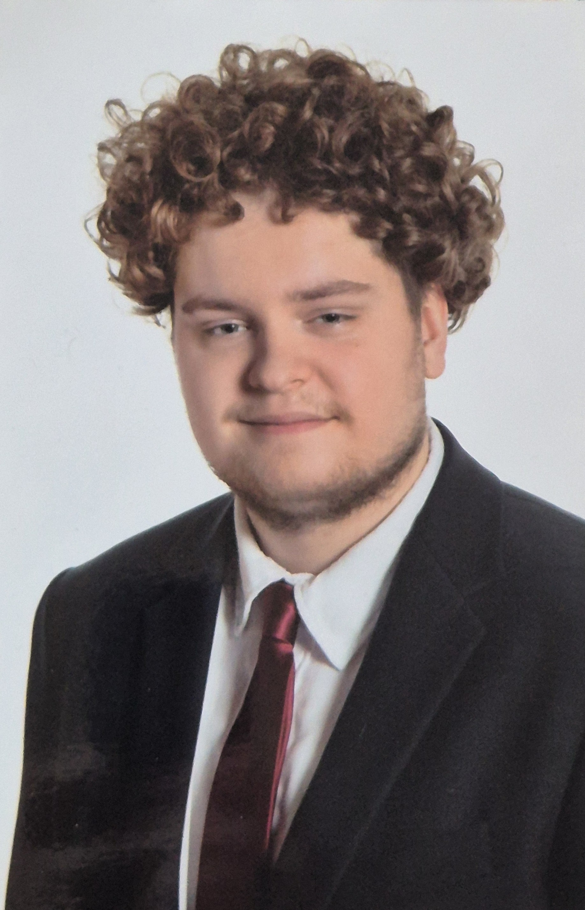

Takács Barnabás vagyok. 18 éves. A szombathelyen lakom
Tanulmányaimat 2021-ben kezdtem a VVSC Gépipari és Informatikai Techinkumban ahol ipari informatikai szakon tanulok
Gyerekkorom óta érdekelnek az informatikai és elektronikai feladatok és eszközök.
A Gépiparit egy jó barátunk ajánlott nekunk aki a villamos területen dolgozik
A középiskola után a Győri Széchenyi István Egyetemen szeretnék tanulni ezenbelül a Villamosmérnöki karon.
Ha sikeresen végzek az egyetemen akkor pedig vagy Szombathely vagy Győr környékén szeretnék munkába állni villamosmérnökként.
